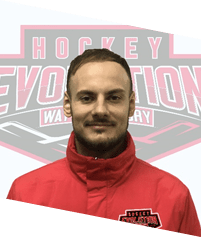
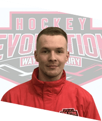
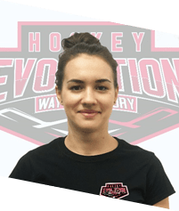

Хоккейный
лагерь
лагерь
hockey star camp
1-13 июня
о проекте
Hockey Star Camp – первый и единственный в Украине хоккейный про-лагерь под руководством тренера с европейским опытом. Это новый и амбициозный проект, инициаторы которого посвятили жизнь преподаванию в области хоккея и точно
знают, как найти индивидуальный подход к каждому из участников лагеря и сделать из них настоящих звезд.
Активные спортивные тренировки, теоретические знания, новые знакомства, пляжные вечеринки на берегу Азовского моря, мастер-классы на льду суперсовременной ледовой арены от звезд украинского хоккея – именно то, что необходимо начинающим спортсменам во время незабываемых летних каникул.
Активные спортивные тренировки, теоретические знания, новые знакомства, пляжные вечеринки на берегу Азовского моря, мастер-классы на льду суперсовременной ледовой арены от звезд украинского хоккея – именно то, что необходимо начинающим спортсменам во время незабываемых летних каникул.


Уникальность
Hockey Star Camp основан на материально-технической базе ледовой арены Mariupol Ice Center. Она предоставляет участникам раздевалки, рядом находятся стадион и площадка для тренировок «на земле», отель с рестораном – все необходимое для организации лагеря.
Мы продумываем смену таким образом, чтобы в течение недели дети с помощью профессиональных тренеров усовершенствовали технические навыки и необходимые упражнения, ощутили веселую и вдохновляющую атмосферу, которую дарит молодежный
хоккей, а еще завели друзей и получили удовольствие от пребывания в лагере.
Место проведения
Тренировочный процесс организован на арене Mariupol Ice Center, где проходят матчи Украинской хоккейной лиги, и которая является домашней площадкой хоккейного клуба «Мариуполь».

Проживание и питание
Участники лагеря, которые приобрели пакет «Полный пансион», размещаются в двух- и трехместных номерах отеля г. Мариуполь. Для них организовано четырехразовое питание при отеле. На ледовую арену и обратно детей привозит комфортабельный автобус. Участникам
с пакетом «Базовый» предоставляются спортивные перекусы.

Безопасность
К каждой группе прикреплены тренеры-кураторы, которые круглосуточно находятся на связи с участниками лагеря и всегда готовы прийти на помощь. Ежедневно о здоровье юных хоккеистов заботятся доктора-травматологи. Также организаторы Hockey Star Camp придерживаются
всех санитарных норм, связанных с распространением COVID-19.
Развлечения
Участников лагеря ожидают не только активные тренировки, но и активный, и интересный досуг. Для них проводятся культурные и игровые мероприятия, обязательны походы на пляж.

Лагерь в онлайне
Ежедневно в течение всей смены публикуются фотоотчеты и новости о тренировках и досуге участников в официальных сообществах лагеря в соцсетях – Facebook и Instagram. Также тренеры-кураторы создают в мессенджерах специальные группы для родителей, где они
могут задавать вопросы и получать актуальную информации о всем, что происходит в Hockey Star Camp.


Даты заезда
1-7июня
1-7июня
Тренировочный процесс
Тренеры школы Evolution Hockey имеют многолетний и успешный опыт работы с юными хоккеистами. Они точно знают, как сделать из ребенка звезду хоккея. Поэтому весь тренировочный процесс профессионалы делают уникальным и интересным – таким, который призван
развить личные качества и физические навыки участников лагеря. И в этом им помогают разнообразные тренировки, направленные на оттачивание основных навыков хоккеиста.

Тренировки
на льду
на льду
Тренерский штаб в старших группах применяет комплекс упражнений, направленный на отработку специальных силовых качеств, развития игрового-оперативного мышления, мобильности и ловкости на льду, совершенствование технических навыков. Участники лагеря младшего
возраста занимаются освоением базовых технических навыков и дальнейшим их совершенствованием.
Специальная физическая подготовка (СФП)
Занятия «на земле» призваны развивать основные физические качества юных спортсменов: быстроту, силу, выносливость, ловкость, растяжку и координацию. Обязательным акцентом в СФП являются командные игры. По итогу смены среди участников устраиваются Турниры
обретенных навыков с поощрительными призами.
Теоретические
занятия
и семинары
занятия
и семинары
Ежедневно для участников лагеря проводятся теоретические занятия и открытые семинары на тему «Спорт и я», где юным хоккеистам рассказывают о необходимости правильного питания, спортивном режиме, дисциплине, успеваемости в школе, отношении к спорту и правильному
развитию тела и духа.
возрастные группы
Старшая
группа
группа
2003-2006 г.р.
В старшей группе проводятся занятия на льду, в ходе которых отрабатываются: техника катания, баланс, скорость, ловкость, игровое мышление, дриблинг (контроль шайбы в единоборствах), разновидность передач (с финтов/обводок, на скорости с поднятой головой),
броски из любых положений. Также обязательна СФП, которая призвана усовершенствовать координацию, гибкость, воспитание скорости избирательной ЦНС, развитие подвижности в суставах, задействованных в наибольшей мере при игре
в хоккей, развитие психомоторических способностей, тренировка наиболее необходимых групп мышц для игры в хоккей, сила толчка.
Средняя
группа
группа
2007-2010 г.р.
Для средней группы организуются занятия на льду, призванные отработать технику катания, баланс, скорость, ловкость, игровое мышление, дриблинг без зрительного контакта, разновидность передачи с поднятой головой, разновидность бросков, броски с обводок.
Ребята также будут заниматься СФП для развития координации, гибкости, воспитания скорости избирательной ЦНС, развития подвижности в суставах, задействованных в наибольшей мере при игре в хоккей, развития психомоторических способностей,
тренировки наиболее необходимых мышц для игры в хоккей, силы толчков.
Младшая
группа
группа
20011-2013 г.р.
Младшая группа отрабатывает на льду основы техники катания, биомеханику хоккейной посадки, баланс, ведение и контроль шайбы, передачи, броски. Специальная физическая подготовка предусматривает акцент на координацию, баланс, ловкость, развитие подвижности
в суставах, задействованных в наибольшей мере при игре в хоккей.
В группах по 25 участников. За каждой закреплен тренер.
Тренерский штаб

Дмитрий
Коржилецкий
Коржилецкий
Старший тренер Hockey Star Camp
Дипломированный специалист первой категории, диплом выдан Федерацией хоккея Словении. Опыт работы в тренировочных хоккейных лагерях – 4 года. Тренер по катанию и навыкам лагеря Bled Hockey (Словения). Главный тренер по катанию и навыкам клуба HKMK BLED,
главный тренер клуба по СФП. Ассистент тренера команды мастеров, ассистент тренера команды U19.

Александр
Никуличев
Никуличев
Сооснователь и тренер школы Hockey Evolution
Кандидат в мастера спорта. Тренер ХК «Белые Медведи». Тренер Школы для взрослых. Тренер-преподаватель ДЮСШ «Сокол» с 2016 г.
Дипломированный специалист Национального университета физического воспитания и спорта Украины (2014-2016 гг.). Специальность: тренер-преподаватель по хоккею с шайбой, тренер- преподаватель по физкультуре.
Дипломированный специалист Национального университета физического воспитания и спорта Украины (2014-2016 гг.). Специальность: тренер-преподаватель по хоккею с шайбой, тренер- преподаватель по физкультуре.
Денис
Вовк
Вовк
Сооснователь и тренер школы Hockey Evolution
Кандидат в мастера спорта. Тренер первой категории. Тренер-преподаватель ДЮСШ «Сокол» с 2012 р.
Дипломированный специалист Национального университета физического воспитания и спорта Украины (2006-2011 гг.). Оконченные курсы: тренера тренажерного зала; оказания первой неотложной помощи 1AID; повышения тренерской квалификации Национального университета физического воспитания и спорта Украины; спортивного массажа.
Дипломированный специалист Национального университета физического воспитания и спорта Украины (2006-2011 гг.). Оконченные курсы: тренера тренажерного зала; оказания первой неотложной помощи 1AID; повышения тренерской квалификации Национального университета физического воспитания и спорта Украины; спортивного массажа.

Николай
Дворник
Дворник
Тренер
Дипломированный специалист Национального университета физического воспитания и спорта Украины. Специальность – тренер по хоккею. Опыт работы в летних тренировочных лагерях – более 3 лет.

Евгений
Немилостивый
Немилостивый
Тренер по катанию
Мастер спорта по конькобежному спорту, многократный призер чемпионата Украины.

Элен
Алипова
Алипова
Помощник тренера
Чемпионка Украины, серебряная и бронзовая призерка чемпионатов Украины среди женщин. Победительница квалификации к чемпионату мира по хоккею, участница чемпионата мира по хоккею в составе национальной женской сборной Украины.

Элизабет
Алипова
Алипова
Помощник тренера
Чемпионка Украины, серебряная и бронзовая призерка чемпионатов Украины среди женщин. Победительница квалификации к чемпионату мира по хоккею, участница чемпионата мира по хоккею в составе национальной женской сборной Украины.